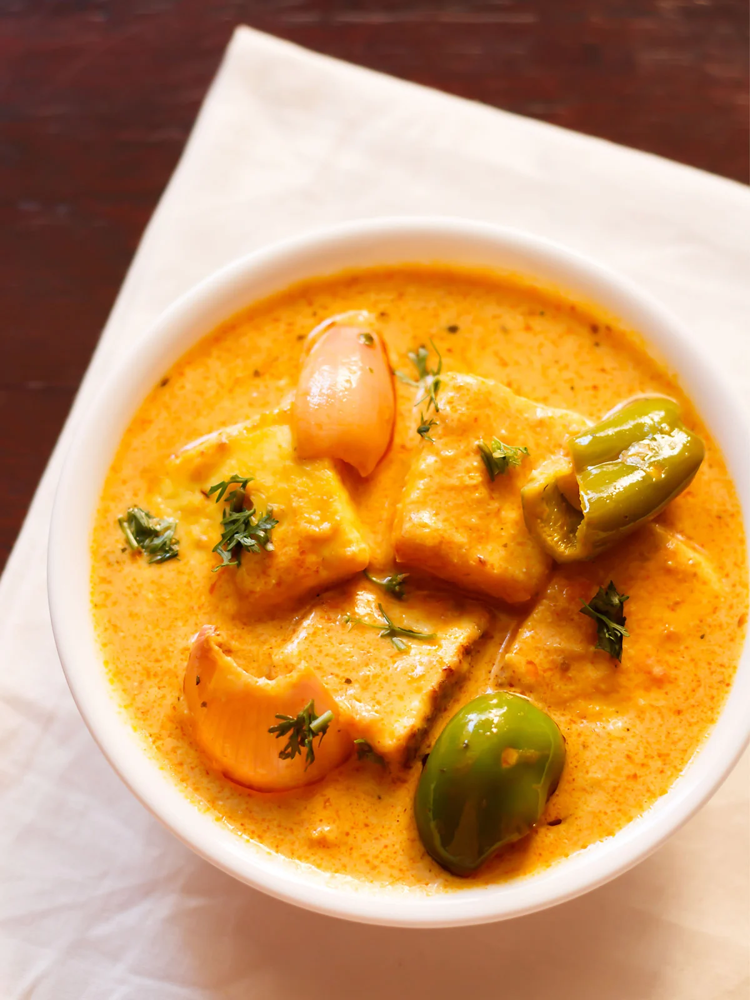

Paneer Tikka Masala

Ingredients
For Tikka:
- 200 gms (7 oz) Paneer (Cottage Cheese), cut into 1-inch cubes
- 1 teaspoon Ginger-Garlic Paste
- 1/4 cup Hung Curd or Thick Curd
- 1/2 teaspoon Tandoori Masala Powder, optional
- 1/2 tablespoon Cumin-Coriander Powder
- 1 teaspoon Red Chili Powder
- 1/2 teaspoon Kasuri Methi (dried fenugreek leaves)
- 1/2 teaspoon Chat Masala Powder
- 1 teaspoon Lemon Juice
- 2 tablespoons Oil
- Salt to taste
For Gravy:
- 1 Black Cardamom
- 1 tablespoon Whole Dry Coriander Seeds
- 1-inch long small piece of Cinnamon
- 1 Dry Red Kashmiri Chili
- 8-10 Cashew-nuts
- 2 large Onion, finely chopped
- 2 small Tomatoes, finely chopped
- 1/2 teaspoon Red Chili Powder
- 1/4 teaspoon Turmeric Powder
- 1/2 teaspoon Garam Masala Powder
- 1/2 teaspoon crushed Kasuri Methi (dry fenugreek leaves)
- A pinch of Red Food Color, optional
- 1/4 cup Fresh Cream
- 1½ tablespoons Oil or Butter
- Salt to taste
- 1 cup Water
- 2 tablespoon finely chopped Coriander Leaves, for garnishing
Directions
- Preheat oven to 375°F.
- In a medium sized bowl combine paneer, ginger, garlic, hung curd, thick curd, tandoori masala powder, cumin-coriander powder, red chili powder, kasuri methi, chat masala powder, lemon juice, oil, salt, black pepper, onion, tomatoes, red chili, turmeric, garam masala powder, coriander seeds, cinnamon, red food color, water, coriander leaves.
- Bake for 15 minutes per lb, about 1 hour 25 minutes or until internal temp of the pan is 165°F.
- Serve the pan